Orchestra: lo strumento per fare cose diverse
Paolo Volterra ![]()
Versione 1.0 — Aprile 2026
1. Il problema che Orchestra risolve
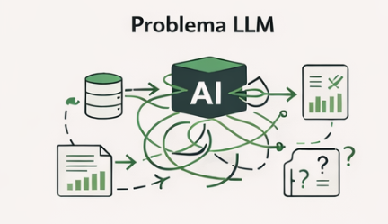
Per capire perché Orchestra esiste, bisogna descrivere con precisione il problema che emerge quando si usa un LLM commerciale — Claude, ChatGPT, Gemini — per produrre analisi quantitative su dati istituzionali.
Il problema non è la qualità della prosa. I modelli linguistici scrivono bene. Il problema è che l’intero processo di analisi — recupero dati, calcolo metriche, formattazione, validazione, impaginazione — finisce dentro una singola conversazione, dove il modello fa tutto: interpreta la domanda, decide quali dati usare, inventa o stima i numeri che non conosce, genera il testo, e produce un output che sembra autorevole ma è intrinsecamente non auditabile.
Questo schema ha tre conseguenze pratiche.
Prima conseguenza: il modello è la fonte. Un LLM non ha accesso diretto a Banca d’Italia, Eurostat o Infocamere. Quando gli si chiede “qual è il tasso di sofferenza delle imprese in Puglia nel 2025?”, può rispondere in due modi: ammettere di non sapere, o sintetizzare una risposta plausibile da dati di training che possono avere anni di ritardo, essere aggregati a livello nazionale, o semplicemente essere errati. In entrambi i casi, la risposta non è verificabile senza andare alla fonte primaria — il che vanifica il risparmio di tempo che il modello dovrebbe garantire.
Seconda conseguenza: l’analista fa da copilota al modello. In una sessione di analisi tipica senza pipeline strutturata, l’analista passa il 70-80% del tempo a correggere output sbagliati, a riformulare prompt, a spiegare al modello il formato dei dati, a verificare che i numeri citati corrispondano alla fonte. Il modello esegue compiti a basso valore aggiunto (cercare la tabella giusta, fare la media, costruire la frase) mentre l’analista esegue compiti ad alto valore aggiunto (verificare, correggere, reinterpretare). Il rapporto è invertito rispetto a quello desiderato.
Terza conseguenza: l’output non è auditabile. Un report prodotto da una conversazione LLM non ha provenienza tracciabile. Non si può rispondere alla domanda “da dove viene questo numero?” con un riferimento preciso a una riga di database, una query SQL, un file parquet datato. L’output è testo, non un artefatto con storia.
Orchestra nasce per invertire questo schema.
2. L’idea centrale
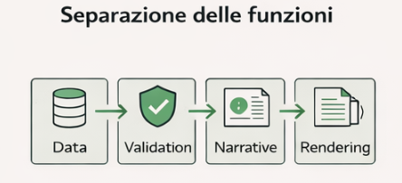
L’idea di base di Orchestra è semplice e non nuova nell’ingegneria del software: separare le preoccupazioni.
Un’analisi quantitativa è composta di fasi eterogenee che hanno requisiti radicalmente diversi:
Il recupero dei dati richiede precisione deterministica, accesso a sorgenti certificate, nessuna tolleranza per l’approssimazione.
La validazione richiede regole formali, exit code binari, tracciabilità degli errori.
La narrazione richiede capacità di sintesi, senso del contesto, linguaggio istituzionale — ma su input già disciplinati e verificati.
Il render richiede un sistema di tipografia capace di produrre output professionale.
Nessuno di questi passaggi è meglio svolto dallo stesso agente. Un LLM è ottimo per la narrazione e pessimo per il recupero dati preciso. Python è ottimo per il recupero e il calcolo, incapace di produrre prosa. Quarto è ottimo per il render, ignaro del contenuto.
Orchestra è una pipeline che assegna ogni fase all’agente giusto, e definisce contratti di input/output tra le fasi in modo che l’output di ciascuna sia verificabile prima di diventare input della successiva.
3. Architettura della pipeline
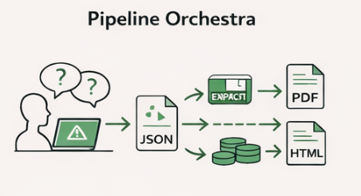
La pipeline Orchestra si articola in cinque fasi sequenziali, ognuna con uno script dedicato e un formato di output fisso.
[domanda umana]
│
▼ step1_spec → input.json
▼ step2_execute → results.json + parquet + PNG
▼ step_validate → validation_report.json
▼ step3_narrative → narrative.md
▼ step4_render → report.html / report.pdfstep1_spec — La specifica dell’analisi
Questo è l’unico punto della pipeline in cui un LLM commerciale è coinvolto in modo strutturale. L’analista descrive in linguaggio naturale ciò che vuole analizzare — “voglio un quadro macroeconomico della Sicilia con PIL, occupazione e credito alle imprese, confrontato con la media nazionale” — e il modello produce un file input.json strutturato secondo lo schema Orchestra.
Questo passaggio è la traduzione dalla intenzione umana alla specifica macchina-leggibile. È il lavoro per cui i modelli linguistici sono effettivamente eccellenti: comprendere l’intento, selezionare gli alias corretti dal catalogo, costruire la struttura dati. Una volta prodotto input.json, il LLM commerciale ha terminato il suo ruolo per questa analisi.
Il formato di input è versionato e validato a schema. Un esempio minimale per un’analisi a blocchi:
{
"analysis_id": "macro_sicilia_v1",
"analysis_type": "blocks",
"territory": {"name": "Sicilia", "level": "regione", "code": "ITG1"},
"time": {"start": "2015-01", "end": "2026-12"},
"benchmark": {"enabled": true, "territories": [{"name": "Italia", "code": "IT"}]},
"blocks": [
{
"id": "credito",
"label": "Credito alle imprese",
"series": [{"alias": "loans_nfc", "transformations": ["level", "yoy", "index_2019_100"]}]
}
]
}step2_execute — Il motore dati
step2_execute.py è il cuore computazionale della pipeline. Non chiama mai un LLM. Legge input.json, interroga le sorgenti dati censite in catalog.json, calcola le metriche richieste, e produce results.json con struttura verificabile.
Le sorgenti supportate coprono l’intero ecosistema di dati strutturati:
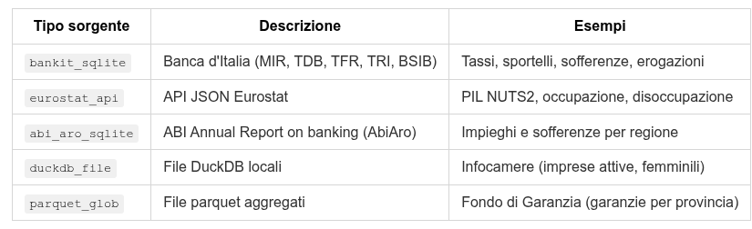
Il catalogo (catalog.json) è l’unica fonte di verità sui codici tecnici. Nessun LLM conosce i codici Bankit — quella conoscenza è cristallizzata nel catalogo in forma leggibile e manutenibile dagli analisti.
Il dispatch interno di step2 segue una gerarchia esplicita:
Se l’input ha
blockseanalysis_type=cross_section→ adapter cross-section con struttura a blocchiSe l’input ha
blocks(serie temporali) → adapterrun_blocks()con trasformazioniSe
analysis_type=cross_sectionsenza blocks → adapter cross-section legacyAltrimenti → percorso time-series legacy
Le trasformazioni supportate (level, yoy, delta_pp_yoy, index_2019_100, var_pct_precovid) vengono calcolate automaticamente su ogni serie richiesta, applicando finestre temporali robuste (±30 giorni per la variazione anno/anno, baseline 2015-2019 per il pre-Covid).
I benchmark (confronti vs. Italia) vengono recuperati dalla stessa sorgente dati per il territorio di riferimento e aggiunti alla struttura di ogni serie.
L’output results.json è un documento strutturato che contiene, per ogni blocco e ogni serie, tutte le metriche calcolate con la loro provenienza. I dati grezzi sono salvati in parquet — immutabili, versionabili, riproducibili. I grafici vengono generati in PNG.
step_validate — Il contratto di qualità
Prima che qualsiasi LLM veda i dati, step_validate.py li sottopone a un set di check formali. Il principio è semplice: un LLM non deve mai ricevere dati parziali, malformati o incongruenti senza che un sistema deterministico li abbia prima certificati.
I check sono organizzati per schema:
Schema
blocks(serie temporali): verifica che ogni serie abbia alias, label, metriche numericamente valide; che i benchmark siano dizionari ben formati; che almeno una metrica utile sia presente per serie.Schema
cross_section: verifica l’esistenza dei blocchi di ranking, la presenza di statistiche di sistema, la coerenza dei segnali economici.Schema legacy: verifica la copertura temporale (almeno 75% dei mesi richiesti), l’esistenza di parquet e PNG su disco, la numerabilità dei valori.
Ogni check produce un risultato pass/fail con severità (critical o warning). Solo i critical bloccano la pipeline. I warning vengono registrati ma non interrompono l’esecuzione (salvo flag --strict). Il report di validazione è un artefatto JSON, leggibile sia da macchina che da umano.
Questo step è l’equivalente di un test suite su dati, non su codice: certifica che ciò che entra nella fase narrativa rispetta il contratto atteso.
step3_narrative — Il modello locale come redattore
step3_narrative.py chiama un modello linguistico locale via Ollama (primario: Qwen 2.5 7B instruct; fallback: Mistral) per produrre la narrativa del report.
Il punto critico di design: il modello locale non decide cosa analizzare, non sceglie i dati, non calcola nessuna metrica. Riceve in input un messaggio strutturato che contiene:
Il contesto dell’analisi (territory, time_range, analysis_id)
I dati già calcolati e validati (metrics per blocco, benchmark, segnali)
La struttura narrativa attesa (## Sintesi esecutiva / ## [Label blocco] / ## Conclusioni)
Il sistema prompt (versionato in prompt_template/) definisce le regole editoriali: usare solo i dati presenti, struttura A/B/C per ogni blocco (Dati → Interpretazione → Implicazione per il credito), lunghezza 400-700 parole, stile istituzionale.
Il modello locale è un backend sostituibile. La logica di prompt, la struttura dell’input, le regole editoriali — tutto questo appartiene a Orchestra. Il modello è un esecutore che trasforma input disciplinati in prosa. Domani si può sostituire Qwen con qualsiasi altro modello Ollama senza toccare un singolo script.
La scelta di un modello locale per questo step non è casuale. La narrativa è prodotta su dati già verificati: non c’è rischio di allucinazione sui numeri, perché i numeri arrivano già formattati nel messaggio. Il modello deve solo scrivere bene. Per questo compito, un modello da 7 miliardi di parametri in quantizzazione Q5 è sufficiente. Non si consuma API budget su token di calcolo che Python esegue meglio e a costo zero.
step4_render — Quarto come tipografo
step4_render.py è un wrapper attorno a quarto render. Legge la narrativa da OUT/, include i grafici, e produce un documento impaginato — HTML, PDF via typst, o entrambi.
Il QMD (Quarto Markdown) è generico: auto-scopre *_results.json e *_narrative.md dalla directory OUT/ del progetto chiamante. Non è hardcodato su nessuna analisi specifica. Lo stesso template funziona per un’analisi Puglia, una Mezzogiorno, una Sicilia — il titolo, il territorio, il contenuto arrivano dal JSON.
4. Il catalogo come contratto tra umano e macchina
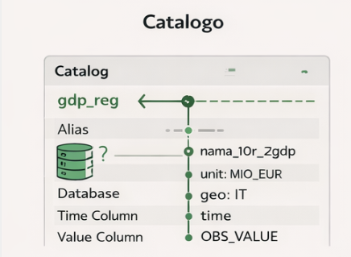
Il catalogo (catalog.json) merita una trattazione separata perché è il componente più sottovalutato e più strategicamente rilevante di Orchestra. Un analista che produce un input.json scrive:
{"alias": "gdp_reg", "transformations": ["level", "yoy", "index_2019_100"]}Sotto questa riga, il catalogo nasconde una complessità tecnica considerevole:
"GDP_REG_IT": {
"source": "eurostat_api",
"dataset": "nama_10r_2gdp",
"fixed_filters": {"unit": "MIO_EUR"},
"territory_dim": "geo",
"geo_prefix": "IT",
"time_col": "time",
"value_col": "OBS_VALUE",
"note": "NUTS2 regional GDP in million EUR. Annual frequency."
}L’alias è il vocabolario umano. Il catalogo è il vocabolario macchina. Il mapping tra i due è curato dagli analisti, non generato da LLM. Questa separazione garantisce che il catalogo sia la fonte di verità certificata su come interrogare ogni sorgente.
Quando viene aggiunta una nuova serie — ad esempio l’indice di competitività settoriale da Istat_Competitivita.duckdb — il lavoro si concentra una sola volta nella voce di catalogo. Ogni analisi futura che usa quell’alias beneficia automaticamente della query corretta, dei filtri giusti, della normalizzazione dell’unità di misura.
Il catalogo contiene anche i gotcha tecnici che altrimenti andrebbero persi o riscoperti ad ogni sessione: il fatto che AbiAro usa macro-aree invece di singole regioni, che la tabella comuni ha 73 righe per Roma e richiede DISTINCT, che le unità monetarie TFR sono in migliaia di euro e richiedono conversione. Questa conoscenza è codificata nel catalogo, non nei prompt, non nella memoria di un analista.
5. Il livello di astrazione: l’analista scrive intenzioni, non query
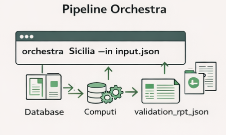
La separazione più importante che Orchestra introduce è quella tra intenzione analitica e implementazione tecnica.
Prima di Orchestra, produrre un quadro macroeconomico regionale richiedeva:
Identificare le serie Bankit pertinenti (codici FENEC, tabelle, filtri)
Scrivere la query DuckDB o sqlite3 corretta
Gestire le eccezioni (dati mancanti, unità di misura diverse, frequenze diverse)
Calcolare le trasformazioni a mano (yoy, indici, variazioni pre-Covid)
Costruire il dataframe finale
Decidere come presentare i dati nel testo
Scrivere la narrativa
Impaginare il documento
Steps 1-5 sono lavoro tecnico a basso valore aggiunto dal punto di vista analitico: richiedono conoscenza procedurale delle fonti, non capacità interpretativa sui dati. Steps 6-8 richiedono giudizio analitico, contestualizzazione, senso istituzionale.
Con Orchestra, l’analista si occupa di step 6-8. Il sistema si occupa di 1-5. Il confine è netto, e si chiama input.json.
Questa separazione ha una conseguenza importante: l’analista può cambiare territorio senza cambiare un singolo parametro tecnico. Per produrre lo stesso quadro macroeconomico per la Calabria invece che per la Puglia, basta cambiare "code": "ITF6" in input.json. Il catalogo sa già come interrogare Eurostat per ITF6, come filtrare AbiAro per Calabria, come costruire i benchmark nazionali. L’analista non deve preoccuparsi di questi dettagli.
6. Il punto di ingresso unificato: orchestra come comando
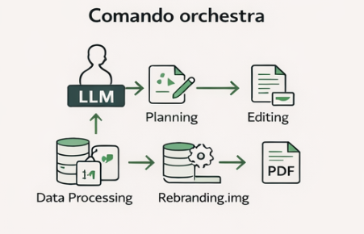
L’interfaccia finale per l’analista è un singolo comando shell disponibile da qualsiasi directory del filesystem:
orchestra Sicilia --in input_sicilia.json --out typstQuesto comando:
Risolve il path dell’input (relativo alla directory corrente)
Crea
report.qmdnel progetto (dal template generico)Lancia la pipeline completa: step2 → validate → step3_narrative → render
Produce tutti gli output nella directory del progetto chiamante
Il --dry-run mostra l’intera sequenza di comandi che verrebbero eseguiti senza eseguirli — strumento essenziale per debug e per la comprensione del sistema.
La risoluzione automatica dell’input segue regole deliberatamente severe: se --in è omesso, Orchestra cerca OUT/input_*<territorio>*.json nella directory corrente. Se trova zero match o più di uno, si ferma con un messaggio esplicito che elenca i candidati. Non indovina, non usa il più recente, non ha fallback impliciti. Questa scelta progettuale riflette un principio operativo: un sistema che fallisce rumorosamente su ambiguità è più sicuro di uno che risolve silenziosamente in modo sbagliato.
L’output del render finisce nel progetto chiamante, non in Orchestra. Orchestra è infrastruttura condivisa, non repository di output. Ogni progetto — BancheSud, Nowcasting, Puglia Macro — mantiene la propria directory con i propri risultati, la propria narrativa, il proprio report. Orchestra non accumula stato tra esecuzioni diverse.
7. Cosa rimane al LLM commerciale
Con Orchestra in produzione, il LLM commerciale (Claude, ChatGPT) svolge un ruolo preciso e circoscritto:
Progettare input.json. Dato un brief analitico — “quadro macroeconomico Puglia, focus credito, confronto con Italia, periodo 2015-2026” — il modello produce la specifica strutturata. Questo è un compito di traduzione da intenzione a schema, per cui i modelli linguistici sono genuinamente ottimi. Richiede comprensione del dominio, conoscenza degli alias disponibili nel catalogo, senso della struttura.
Revisionare la narrativa. La narrativa prodotta dal modello locale (Qwen 7B) è adeguata per struttura e completezza, ma può beneficiare di una revisione da un modello più capace per tono istituzionale, precisione terminologica, coerenza interna su analisi complesse. Questo è un compito di editing, non di produzione da zero.
Sviluppare il sistema stesso. La progettazione di nuovi adapter, la scrittura di nuove voci di catalogo, il debug di query Bankit, la costruzione di nuovi tipi di analisi — questo è lavoro di sviluppo su Orchestra che Claude Code gestisce in sessioni dedicate, con accesso al codice e ai dati reali.
Attività che il LLM commerciale non fa più:
Recuperare dati (lo fa step2_execute)
Calcolare metriche (lo fa step2_execute)
Validare la coerenza dei risultati (lo fa step_validate)
Produrre la prima bozza della narrativa (lo fa step3_narrative con Qwen locale)
Impaginare il report (lo fa step4_render via Quarto)
Il budget API del LLM commerciale viene concentrato su ciò che solo un modello ad alta capacità può fare bene: comprensione dell’intenzione analitica, traduzione in schema, revisione editoriale di alta qualità.
8. Governance e auditabilità
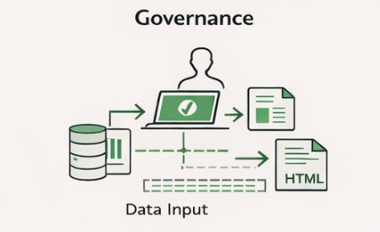
Ogni esecuzione di Orchestra produce una catena di artefatti verificabili:
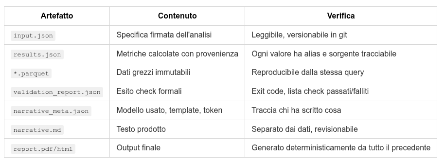
Questa catena risponde alla domanda di audit più comune: “da dove viene questo numero?” La risposta è: dal campo ultimo_valore della serie loans_nfc nel file results.json, calcolato da step2_execute.py interrogando la tabella A5_clean del file AbiAro_clean_N4-2025.sqlite con il filtro TERRITORIO='Puglia', il giorno X con il codice Y della pipeline Z.
Nessun LLM è nella catena di provenienza dei numeri. I numeri sono Python + database certificati. Il LLM è nella catena di provenienza della prosa. Le due catene sono separate e distinguibili.
9. Limiti attuali e sviluppi previsti
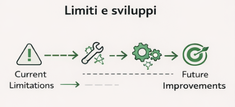
Orchestra è un sistema in costruzione. I limiti attuali sono reali e documentati:
Famiglia B (retrieval documentale): il connettore verso MEMORIA (11.700 documenti, 1.1M chunk, embeddings bge-m3) è stub. Gli step step_retrieve e step_rerank non sono ancora implementati. L’integrazione evidence pack nel messaggio narrativo è prevista ma non attiva.
Modello narrativa: Qwen 2.5 7B in Q5 è adeguato ma non eccellente. Su analisi cross-section complesse tende a semplificare. La soluzione a regime è un modello più capace in locale (Qwen 14B o 32B) oppure la revisione sistematica della bozza con il LLM commerciale come secondo passaggio.
step4_render su QMD generico: il template auto-discovering funziona ma non gestisce ancora la varietà completa di output (tabelle cross-section formattate, multiple charts per blocco, sezioni condizionali per tipo di analisi).
Gli sviluppi previsti a breve termine includono: completamento dell’adapter MEMORIA (famiglia B), rebuild del canonical AbiAro con serie storiche complete, affinamento del template QMD per analisi cross-section, e introduzione del meccanismo di resume per saltare step già completati in esecuzioni precedenti.
10. Il principio guida
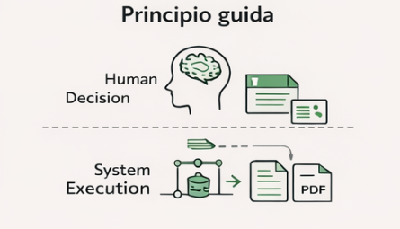
Orchestra non è uno strumento per fare le stesse cose più velocemente. È uno strumento per fare cose diverse.
Senza Orchestra, il tempo dell’analista è distribuito tra recupero tecnico dei dati (alta frequenza, basso valore) e interpretazione (bassa frequenza, alto valore). Con Orchestra, il recupero è automatizzato, la validazione è formale, la prima bozza narrativa è delegata a un modello locale. Il tempo dell’analista si concentra su ciò che non può essere automatizzato: la domanda giusta, l’interpretazione del contesto, il giudizio su cosa è rilevante per il lettore.
Il LLM commerciale è liberato dal ruolo di calcolatore impreciso e diventa ciò per cui è realmente potente: un interlocutore capace di tradurre intenzioni complesse in specifiche eseguibili, e di rivedere output già disciplinati con occhio critico.
La pipeline non pensa. Produce artefatti verificabili a ogni passo. Il pensiero rimane dove deve stare: nell’analista che firma la domanda iniziale e nell’analista che rivede l’output finale. Orchestra è lo spazio tra i due — deterministico, auditabile, riproducibile.
Pubblicato in origine su Substack l’11 aprile 2026.